측량및지형공간정보기사 (2016-03-06 기출문제)
1과목: 측지학 및 위성측위시스템
1. 지구 자기장의 3요소가 아닌 것은?
- 앙각
- 편각
- 복각
- 수평분력
(정답률: 80%)

2. 중력변화의 원인과 가장 거리가 먼 것은?
- 만류인력 상수의 변화
- 지구의 형상과 질량의 변화
- 지질학적 변동
- 대기물질분포의 변화
(정답률: 64%)
3. GPS 측위의 계통적 오차(정오차) 요인이 아닌 것은?
- 위성의 시계오차
- 위성의 궤도오차
- 전리층 지연오차
- 관측 잡음오차
(정답률: 76%)
4. 지구를 회전타원체로 보고 적도를 횡축, 자오선을 종축으로 하며 경도를 6°씩 60개의 종대로 나누고, 위도는 8°씩 20개의 횡대로 나누어 표시하는 좌표계는?
- 물리적 지표 좌표계
- 국제횡메르카토르 좌표계
- 평면직교 좌표계
- 횡메르카토르 좌표계
(정답률: 80%)
5. 해면 위에서 2대의 배가 서로 반대방향으로 항해했을 때 서로 보이는 상호 간의 한계 수평거리는? (단, 속도는 같고 장해물이 없으며 배의 높이는 각각 2m이고 관측자의 눈높이는 배의높이와 같고, 지구곡률 반지름은 6370km, 빛의 굴절계수는 0.14이다.)
- 약 5km
- 약 7km
- 약 11km
- 약 22km
(정답률: 53%)
6. 위성의 고도각이 낮아지면서 증대되는 오차는?
- Anti-Spoofing
- Selective Availability
- 시계오차
- 대기오차
(정답률: 62%)
7. L2 주파수는 기준 주파수(10.23 MHz)의 몇 배인가?
- 100배
- 110배
- 120배
- 154배
(정답률: 68%)
8. 지오이드에 대한 설명 중 틀린 것은?
- 지오이드는 평균해수면에 가까운 등포텐셜면이다.
- 지오이드는 평면위치의 기준면이 된다.
- 지오이드는 중력으로부터 결정할 수 있다.
- 지오이드로부터 지구 내부물질의 밀도를 추정할 수 있다.
(정답률: 50%)
9. 측량의 목적, 지역의 광협, 측량의 정확도 등에 따라서 지구를 구로 보고 그 표면상에서 지점의 위치를 표시하는 경우에 사용하는 반지름은? (단, M : 자오선의 곡률반지름, N : 묘유선방향의 곡률반지름)
- 평균곡률반지름
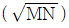
을 사용한다. - 원점과 지구의 중심을 연결하는 길이를 반지름으로 한다.
- 묘유선 방향의 곡률반지름(M)을 사용한다.
- 자오선의 곡률반지름(N)을 사용한다.
(정답률: 70%)
10. GPS 위성신호에 대한 설명으로 옳지 않은 것은?
- 위성신호가 전리층을 통과할 때 위상(carrier)은 광속보다 빨리 진행된다.
- 위성신호가 전리층을 통과할 때 코드(code)는 광속보다 느리게 진행된다.
- 위성신호가 대류층을 통과할 때 코드(code)는 광속보다 느리게 진행된다.
- 위성신호가 대류층을 통과할 때 위상(carrier)은 광속보다 빨리 진행된다.
(정답률: 59%)
11. GPS의 정확도가 1ppm이라면 기선의 길이가 20km일 때 GPS를 이용하여 어느 정도로 정확하게 위치를 알아낼 수 있다는 것을 의미하는가? (단, 상수오차(Constant error)는 0임)
- 2mm
- 2cm
- 2m
- 2km
(정답률: 57%)
12. GPS 수신기에 의해 구해지는 높이 값은?
- 지오이드고
- 정표고
- 역표고
- 타원체고
(정답률: 61%)
13. 중력보정으로 옳지 않은 것은?
- 도플러 보정
- 프리-에어 보정
- 지각평형 보정
- 단순 부게 보정
(정답률: 49%)
14. DGPS 측량방법을 사용하는 이유에 대한 설명으로 옳은 것은?
- 단독(절대)측위보다 빠른 계산을 위하여
- 단독(절대)측위보다 연속적인 위치 계산을 위하여
- 단독(절대)측위보다 정확한 위치를 계산하기 위하여
- 단독(절대)측위보다 실내측위 적용성 향상을 위하여
(정답률: 75%)
15. 관측자가 이동국 GPS만을 운용하며, GPS 상시관측소들로부터 생성된 관측오차보정 데이터를 무선인터넷으로 수신 받아 실시간 정밀위치 측정을 수행하는 GPS 측량 방식은?
- 정지측량
- 이동측량
- VRS측량
- Fast-static측량
(정답률: 75%)
16. 다음 중 위성항법시스템이 아닌 것은?
- GPS
- Galileo
- GOCE
- GLONASS
(정답률: 76%)
17. GPS 관측계획 수립 시 고려해야 할 사항 중 틀린 것은?
- 보유 수신기 대수
- 동원 가능한 인원
- 관측시간
- 사이클 슬립 양
(정답률: 63%)
18. 우리나라 측지기준에 대한 설명으로 옳은 것은?
- GRS80 타원체를 사용한다.
- 동경측지계를 사용한다.
- 수준망은 GPS 관측에 의해 구축되었다.
- 1등 삼각점은 최상위 등급의 측지기준점이다.
(정답률: 63%)
19. 지자기 측량에 관한 설명으로 옳은 것은?
- 지자기는 방향과 크기를 가진 벡터량이다.
- 지자기의 방향과 자오선과의 각을 복각이라 한다.
- 지자기 영년변화는 주로 태양이나 달에 의하여 발생한다.
- 실제 지자기 측량에서 복각이 +90°인 지점을 지자기 남극이라 한다.
(정답률: 47%)
20. 균시차에 대한 설명으로 옳은 것은?
- 항성시와 평균태양시의 편차
- 최대태양시와 항성시의 편차
- 시태양시와 평균태양시의 편차
- 시태양시와 항성시의 편차
(정답률: 78%)
2과목: 응용측량
21. 하천측량 중 유속관측에 관한 설명으로 옳지 않은 것은?
- 유속관측은 유속계에 의한 방법, 부자에 의한 방법, 하천기울기를 이용한 방법 등이 있다.
- 관측 장소의 상ㆍ하류의 유로는 일정한 단면을 갖고 있으며 관측이 편리한 곳을 선정하여 관측한다.
- 수위의 변화에 의해 하천 횡단면 형상이 급변하지 않고 토질이 양호한 곳을 선정하여 관측한다.
- 곡류부로서 흐름이 일정하고, 하상의 요철이 많으며 하상경사가 일정한 곳을 선정하여 관측한다.
(정답률: 67%)
22. 완화곡선에 대한 설명으로 옳지 않은 것은?
- 완화곡선에 연한 곡선반지름의 감소율은 캔트의 증가율과 같다.
- 곡선반지름은 완화곡선의 시점에서 무한대, 종점에서 원곡선의 반지름이 된다.
- 완화곡선의 종점에 있는 캔트는 직선의 캔트와 같게 된다.
- 완화곡선의 접선은 시점에서 직선에, 종점에서 원호에 접한다.
(정답률: 45%)
23. 그림과 같은 △ABC의 면적을 2등분하기 위한
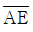
의 길이는?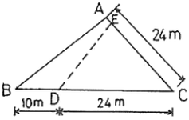
- 5m
- 6m
- 7m
- 8m
(정답률: 58%)
24. 토지구획정리측량의 확정측량에 관한 설명으로 가장 적합한 것은?
- 토지구획내의 기준점, 다각점, 수준점 등의 계획도를 작성하기 위한 측량이다.
- 토지구획정리사업 시행구역과 인접하는 사유지 또는 공공용지와의 경계를 명확히 하여 시행하는 총 면적을 확정하는 측량이다.
- 건축물 이전, 도로 등의 기타 공사가 완료된 후 공공시설물 경계점 및 필지경계점의 위치를 관측하고 가구(街區)의 형상, 필지의 형상, 면적을 검사하여 이상의 유무를 확인하는 측량이다.
- 공공용지인 도로, 수로, 공원 등과 사유지인 택지계를 기본설계에 기초하여 중심점, 가구점을 좌표값에 따라 현지에 표시하는 작업이며, 환지면적을 확보하여 필지말뚝을 현지에 설치하는 작업을 말한다.
(정답률: 49%)
25. 하천의 평균유속을 구하기 위한 1점법에 대한 설명으로 옳은 것은?
- 수면에서 수심의 8/10 지점의 유속을 측정하여 그 값을 평균유속으로 한다.
- 수면에서 수심의 6/10 지점의 유속을 측정하여 그 값을 평균유속으로 한다.
- 수면에서 수심의 4/10 지점의 유속을 측정하여 그 값을 평균유속으로 한다.
- 수면에서 수심의 2/10 지점의 유속을 측정하여 그 값을 평균유속으로 한다.
(정답률: 62%)
26. 그림은 도로중심선 측량도이다. 원곡선의 반지름(R)이 100m, α = 45°, β = 75°,
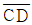
= 100m일 때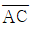
의 길이는?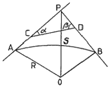
- 61.7m
- 71.8m
- 83.6m
- 89.6m
(정답률: 43%)
27. 경관측량에서 인식대상의 주체에 대하여 경관을 자연경관, 인공경관, 생태경관으로 분류할 때 자연경관에 해당되지 않는 것은?
- 산
- 정원
- 하천
- 바다
(정답률: 76%)
28. 그림과 같이 터널에서 직접 수준측량을 하였을 때 B점의 지반고 HB를 구하는 식으로 옳은 것은?
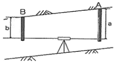
- HB=HA-a+b
- HB=HA+a-b
- HB=HA+a+b
- HB=HA-a-b
(정답률: 51%)
29. 완화곡선으로 사용하는 클로소이드에 관한 설명으로 옳지 않은 것은?
- 단위 클로소이드의 각 요소는 모두 무차원이다.
- 클로소이드는 곡률이 곡선길이에 비례하는 곡선이다.
- 클로소이드의 종점좌표(X,Y)는 그 점의 접선각(τ)의 함수로 나타낼 수 있다.
- 모든 클로소이드는 닮은꼴이다.
(정답률: 55%)
30. 터널 내 수준측량에서 지형이 급경사인 경우 가장 적당한 방법은?
- 레벨을 사용하는 방법
- 클리노미터에 의한 방법
- 기압계를 사용하는 방법
- 토털스테이션을 사용하는 방법
(정답률: 62%)
31. 하천의 폭이 200~500m일 때 하천종단측량의 간격 표준은?
- 50m 내외
- 100m 내외
- 200m 내외
- 500m 내외
(정답률: 60%)
32. 터널측량에서 지표 중심선 측량방법과 직접적인 관련이 없는 것은?
- 토털스테이션에 의한 직접 측량법
- 트래버스 측량에 의한 측설법
- 삼각 측량에 의한 측설법
- 레벨에 의한 측설법
(정답률: 50%)
33. 선박에서 음향 측심기로 음파를 발신하여 수신할 때까지 걸린 시간이 0.1초이었다면 수심은? (단, 해수 중의 음파속도는 약 1500m/s이며, 수면에서 송ㆍ수파기까지의 길이는 3m이다.)
- 75m
- 78m
- 150m
- 153m
(정답률: 43%)
34. 어떤 하천에서
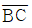
를 따라 그림과 같이 심천측량을 실시할 때 P점에서 ∠APB를 관측하여 39°20'을 얻었다면 BP의 거리는? (단, AB = 73m)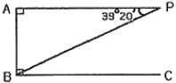
- 96.30m
- 115.17m
- 125.13m
- 155.80m
(정답률: 52%)
35. 계산된 완화곡선의 편경사(cant)가 C일 때, 계산시 사용한 속도와 반지름을 모두 2배로 하면 캔트는 몇 배가 되는가?
- 2배
- 4배
- 6배
- 8배
(정답률: 65%)
36. 100m2 정사각형 토지의 면적을 0.2m2까지 정확하게 구하기 위해서는 1변의 길이를 최대 몇 cm까지 정확하게 관측하여야 하는가?
- 0.5cm
- 1.0cm
- 1.5cm
- 2.0cm
(정답률: 53%)
37. 노선측량의 단곡선 설치시 교각 60°, 곡선 반지름 100m, 곡선 시점은 No.10+15m일 때 도로기점에서 곡선 종점까지의 거리는? (단, 중심 말뚝간격 20m)
- 119.72m
- 272.74m
- 319.72m
- 356.87m
(정답률: 43%)
38. 사각형 형태의 부지에 대하여 동일한 간격으로 나누어 그 지점의 표고를 관측한 결과를 이용하여 토공량을 산출하기 위한 방법은?
- 양단면평균법
- 중앙단면법
- 점고법
- 등고선법
(정답률: 55%)
39. 그림과 같은 지형의 면적은? (단, 단위는 m이다.)
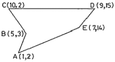
- 63m2
- 58m2
- 53m2
- 48m2
(정답률: 43%)
40. 단곡선 설치에 있어서 반지름 R=100m, 교각 I=30°일 때 다음의 곡선요소 값으로 옳은 것은? (단, C.L. : 곡선장, L : 장현)
- C.L. = 52.36m, L = 51.76m
- C.L. = 51.76m, L = 52.36m
- C.L. = 51.76m, L = 26.79m
- C.L. = 52.36m, L = 26.79m
(정답률: 51%)
3과목: 사진측량 및 원격탐사
41. 초점거리 150mm, 사진의 크기 23cm×23cm의 카메라를 사용하여 촬영고도 4500m에서 평지에 대한 연직사진을 획득하였다. 서로 이웃하는 2장의 사진에서 주점 간의 거리를 1:25000 지형도 상에서 측정하니 96.6mm이었다면 두 사진의 종중복도는?
- 55%
- 60%
- 65%
- 70%
(정답률: 49%)
42. 초점거리가 서로 다른 2대의 사진기로 취득한 2장의 사진에 대해 공선 조건식을 적용하는 경우에 대한 설명으로 옳은 것은?
- 1쌍의 공선조건식에 2개의 초점거리를 평균한 값을 사용한다.
- 1쌍의 공선조건식에 서로 다른 초점거리를 그대로 사용한다.
- 1쌍의 공건조건식에 왼쪽 사진의 초점거리를 선택하여 사용한다.
- 1쌍의 공건조건식에 오른쪽 사진의 초점거리를 선택하여 사용한다.
(정답률: 45%)
43. 비행기의 운항속도 180km/h, 촬영고도 3000m, 렌즈의 초점거리 210mm, 허용 흔들림 0.02mm로 촬영 계획을 할 때 최장 노출시간은?
- 1/150초
- 1/175초
- 1/200초
- 1/225초
(정답률: 44%)
44. 기복변위에 대한 설명 중 틀린 것은?
- 정사투영에서는 기복변위가 발생하지 않는다.
- 지표면이 평탄하면 기복변위가 발생하지 않는다.
- 기복변위는 다른 조건이 동일할 때 초점거리에 비례한다.
- 기복변위는 다른 조건이 동일할 때 촬영고도에 반비례한다.
(정답률: 38%)
45. 영상의 재배열 방법 중 주위 16개의 화소값을 이용하여 보간하는 방법은?
- nearest-neighbor interpolation
- cubic convolution interpolation
- bilinear interpolation
- proximal interpolation
(정답률: 53%)
46. SAR(Synthetic Aperture Radar) 영상에서 반사강도에 영향을 주는 요소가 아닌 것은?
- 관측기하
- 지표면의 거칠기
- 유전상수
- 태양빛
(정답률: 53%)
47. 항공사진을 입체시 할 경우 발생하는 과고감과 관련이 없는 요소는?
- 기선길이
- 중복도
- 초점거리
- 지구곡률
(정답률: 57%)
48. 촬영고도 1500m에서 평탄지를 촬영한 연직사진이 있다. 두 사진 상에서 2점간의 시차차를 측정하니 4mm이었다면 이 2점간의 비고차는? (단, 카메라의 초점거리 153mm, 종중복도 60%,사진이 크기 23cm×23cm)
- 19.6m
- 32.6m
- 39.2m
- 65.2m
(정답률: 38%)
49. 원격탐사(Remote Sensing)에 대한 설명으로 틀린 것은?
- 원격탐사는 주로 좁은 지역의 정밀 관측에 활용하고 있다.
- 넓은 의미의 원격탐사에는 중력과 자력도 데이터로 취득되고 있다.
- 탐사 개체에 직접적인 접촉 없이 대상물의 정보를 측정하거나 수집한다.
- 탐사하고자 하는 목표물에서 반사 또는 복사되어 나오는 전자파를 감지하여 물리적 성질을 측정한다.
(정답률: 61%)
50. 도화축척, 항공사진축척, 화소의 지상표본거리(ground sample distance)간의 관계가 틀린 것은?
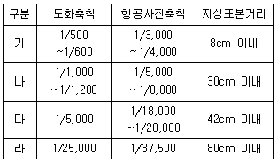
- 가
- 나
- 다
- 라
(정답률: 41%)
51. 해석적 절대표정을 수행할 때 필요한 최소한의 관측방정식 개수는?
- 5
- 6
- 7
- 8
(정답률: 47%)
52. 원격탐사 영향을 이용한 분류에서 비교적 성질이 유사한 특징을 가진 자료를 그룹화하는 방법은?
- 영상융합(image fusion)
- 자료변환(data handing)
- 클러스터링(clustering)
- 자료필터링(data filtering)
(정답률: 46%)
53. 동서 26km, 남북 8km인 지역을 축척 1:30000의 항공사진으로 촬영할 때 입체모델 수는? (단, 23cm×23cm의 광각사진이고, 종중복도 60%, 횡중복도 30%이다. 엄밀법으로 계산하고 촬영은 동서 방향으로 한다.)
- 16
- 18
- 20
- 22
(정답률: 40%)
54. 사진측량에서 Z좌표의 정확도를 높이는 방법과 거리가 먼 것은?
- 축척이 큰 사진을 사용한다.
- 사진좌표의 정확도를 높인다.
- 촬영고도가 높은 사진을 사용한다.
- 기선고도비가 큰 모델을 사용한다.
(정답률: 49%)
55. 항공사진측량에서 지상기준점을 선정할 때의 유의사항에 대한 설명으로 틀린 것은?
- 상공에서 보여야 한다.
- 시간적으로 변화하지 않아야 한다.
- 급한 경사의 지표면이나 경사변환선 상의 점은 피한다.
- 불리한 조건하에서는 측선을 연장한 가상점을 택한다.
(정답률: 67%)
56. 항공영상 촬영 시 도심지에 발생하는 폐색지역을 감소시키기 위한 방법은?
- 비행고도를 낮게 촬영한다.
- 중복도를 크게 한다.
- 사진촬영 간격을 길게 한다.
- 비행기의 속도를 증가한다.
(정답률: 64%)
57. 편위수정에 대한 설명으로 옳은 것은?
- 경사 및 축척의 수정
- 기복변위의 수정
- 시차의 수정
- 비고의 수정
(정답률: 48%)
58. 항공삼각측량의 오차조정 방법 중 해석적 방법에 대한 설명으로 옳은 것은?
- 사진좌표를 기본단위로 조정하는 것을 광속법(bundle adjustment)이라 한다.
- 모델좌표를 기본단위로 조정하는 것을 다항식법(polynomial method)이라 한다.
- 스트립좌표를 기본단위로 조정하는 것을 독립모델법(independent model triangulation)이라 한다.
- 독립모델법(independent model triangulation)은 다른 방법에 비하여 변환 인자가 많고 정밀도는 떨어지는 단점이 있다.
(정답률: 48%)
59. 항공사진과 지도의 투영방법으로 옳은 것은?
- 항공사진-중심투영, 지도-정사투영
- 항공사진-정사투영, 지도-중심투영
- 항공사진-정사투영, 지도-외사투영
- 항공사진-외사투영, 지도-정사투영
(정답률: 60%)
60. 축척 1:5000 항공사진을 1200dpi로 스캔한다면 지상해상도의 크기는?
- 0.11m
- 0.22m
- 0.33m
- 0.44m
(정답률: 33%)
4과목: 지리정보시스템
61. 다음은 지리정보시스템(GIS)의 구성요소 중 무엇에 대한 설명인가?
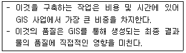
- 소프트웨어
- 하드웨어
- 데이터베이스
- 어플리케이션
(정답률: 73%)
62. TIN에 대한 설명으로 옳지 않은 것은?
- 등고선 자료로부터 DEM을 제작하는데 사용된다.
- 불규칙 표고 자료로부터 등고선을 제작하는데 사용된다.
- 격자형DEM보다 데이터 용량은 크지만 더욱 정확하게 지형을 표현할 수 있다.
- 삼각형 외집원 안에 다른 점이 포함되지 않도록 하는 델로니 삼각망을 주로 사용한다.
(정답률: 44%)
63. 부울(Boolean) 논리를 적용한 레이어의 중첩에서 그림의 빗금친 부분과 같은 논리연산을 바르게 나타낸 것은?
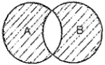
- A AND B
- A OR B
- A XOR B
- A NOT B
(정답률: 63%)
64. 메타데이터(metadata)에 속하는 항목들로 이루어진 것은?
- 도로명, 건물명
- 데이터 품질정보, 데이터 연혁정보
- 레이어코드, 지형코드
- 지물(地物)의 X, Y 좌표
(정답률: 66%)
65. 지하시설물을 측량하여 구축하는 절차로 옳은 것은?
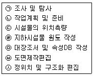
- ㉠-㉡-㉢-㉣-㉤-㉥-㉦
- ㉡-㉠-㉢-㉣-㉤-㉥-㉦
- ㉠-㉡-㉢-㉣-㉤-㉦-㉥
- ㉡-㉠-㉢-㉣-㉤-㉦-㉥
(정답률: 53%)
66. 지리정보로 거리가 먼 것은?
- 지역별 연강수량 정보
- 행정구역별 인구밀도 정보
- 직업군별 평균소득 정보
- 대상지역의 경사도분포 정보
(정답률: 65%)
67. 지리정보시스템(GIS)에 대한 설명으로 옳지 않은 것은?
- 디지털 형태의 데이터로 구축되어 출력물의 축척 변환이 용이하다.
- 기존 수작업 대신 컴퓨터를 이용하여 손쉽게 작업할 수 있다.
- GIS 데이터는 CAD 데이터와 비교하여 형식이 간단하고 취급이 쉽다.
- 다양한 공간 데이터 분석이 가능하여 도시계획, 환경, 생태 등 많은 분야에서 의사결정에 활용될 수 있다.
(정답률: 55%)
68. 실세계에 존재하고 있는 개체(feature)를 지리정보시스템 (GIS)에서 활용 가능한 객체(object)로 변환하는 과정은?
- 추상화(abstraction)
- 일반화(generalization)
- 세분화(segmentation)
- 통합화(integration)
(정답률: 51%)
69. 지형데이터 분석에 있어서 지형을 일정한 격자로 나누어 높이 값을 기록하는 방식은?
- DEM
- Thiessen Polygon
- TIN
- TIGER
(정답률: 55%)
70. 수치지형도의 수시수정 방법으로 적합하지 않은 것은?
- 준공도면을 이용한 방법
- 차량기반 멀티센서 측량시스템(MMS)을 이용한 방법
- 현황측량을 이용한 방법
- 연속지적도를 이용한 방법
(정답률: 46%)
71. 지리정보시스템(GIS)의 기능을 충분히 발휘하기 위한 구비요건에 대한 설명으로 틀린 것은?
- 하나 또는 그 이상의 자료 입력 방식기능
- 소요 공간관계와 관련된 정보의 저장 및 유지기능
- 자료간의 상관성과 적절한 요소들의 원인 결과 반응을 고려한 모형화 기능
- 단일 방식에 의한 자료 출력기능
(정답률: 68%)
72. 지리정보시스템(GIS)의 공간 및 속성자료 분석기능 중 여러 가지 다른 종류의 객체를 합쳐서 상위수준의 클래스로 만드는 기능으로써 대축척 지도로부터 소축척 지도를 만드는 과정에도 적용되는 기능은?
- 일반화(generalization)
- 추출(retrieval)
- 분류(classification)
- 중첩(overlay)
(정답률: 48%)
73. 아래와 같은 조건을 이용하여 산행시간을 구하고자 한다. 산 입구에서 정상까지의 산행에 소요되는 시간은?
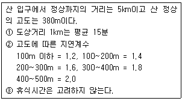
- 1시간 15분
- 1시간 45분
- 2시간 15분
- 2시간 45분
(정답률: 54%)
74. 네트워크 및 인터넷의 발전과 활용에 힘입어 Web GIS 및 Open GIS가 각광을 받고 있다. 우리나라 국토교통부에서는 2012년부터 다양한 공간정보 데이터를 오픈 애플리케이션 프로그램 인터페이스(Open API) 방식으로 일반인에게 제공하여 활용하게 하고 있는데 이러한 서비스 시스템의 명칭은?
- 케이오픈맵(K-OpenMap)
- 구글맵(Google Map)
- 브이월드(V-WORLD)
- 오픈비아이엠(Open BIM)
(정답률: 51%)
75. 지리정보시스템(GIS)에서 데이터베이스관리시스템(DBMS)을 사용하는 이유가 아닌 것은?
- DBMS는 각종 질의 언어를 지원한다.
- DBMS는 저장되어야 할 데이터구조를 정의할 필요가 없다.
- DBMS는 매우 많은 양의 데이터를 저장하고 관리할 수 있다.
- DBMS는 하나의 데이터베이스를 여러 사용자가 동시에 사용할 수 있게 한다.
(정답률: 61%)
76. 수치표고모델(DEM)로부터 얻을 수 있는 자료들로만 짝지어진 것은?
- 경사면의 방향분석도, 경사도에 대한 분석도
- 수계도, 토지피복도
- 가시권에 대한 분석도, 도로망도
- 표고분석도, 역세권분석도
(정답률: 65%)
77. 격자(Raster)구조에서 벡터(Vector)구조로 변환하는 벡터화에 대한 일반적인 과정을 순서대로 나열한 것은?
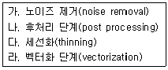
- 가-다-라-나
- 가-나-다-라
- 라-가-나-다
- 라-다-나-가
(정답률: 50%)
78. 수치지도 작성을 위한 자료의 취득 방법으로 틀린 것은?
- 항공사진 또는 영상정보를 이용한 자료의 취득
- 측량기기를 이용하지 않은 평면기준점 측량자료
- 지형지물의 속성, 지명, 행정경계 등을 취득하기 위한 현지 조사
- 기존에 제작된 지도를 이용한 자료의 취득
(정답률: 48%)
79. 지리정보시스템(GIS)의 관망(Network) 분석기능을 이용하는 사례로 거리가 먼 것은?
- 경찰서의 적정 위치 선정
- 도로공사의 토공량 계산
- 항공기의 운항 경로
- 하천의 흐름
(정답률: 58%)
80. Open Geospatial Consortium(OGC)에서 제정한 웹 GIS 표준이 아닌 것은?
- WMS
- WFS
- WCS
- WSDL
(정답률: 53%)
5과목: 측량학
81. 축척 1:500 지형도를 기초로 하여 축척 1:2500의 지형도를 제작하고자 한다. 1:2500 지형도 1도엽은 1:500 지형도를 몇 매 포함한 것인가?
- 45매
- 40매
- 36매
- 25매
(정답률: 59%)
82. 그림과 같이 “사과길”로부터 은행건물의 위치를 정확히 알고자 다음과 같은 측량결과를 얻었다. CD의 거리는? (단, ∠EAB=62°, AB=8m, BC=10m, ∠ABC=∠ADC=90°)
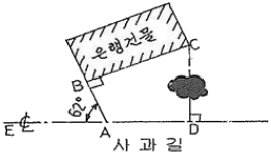
- 11.23m
- 11.50m
- 11.76m
- 11.83m
(정답률: 36%)
83. 길이 48m의 기선을 장력 15kg으로 관측하였다. 관측한 쇠줄자의 단면적 A는 0.129cm2이고, 탄성계수 E = 2.1×106kg/cm2, 표준장력은 10kg이다. 장력에 대한 보정량은?
- 0.078cm
- 0.087cm
- 0.089cm
- 0.093cm
(정답률: 36%)
84. 지형의 표시법에 대한 설명으로 틀린 것은?
- 영선법은 짧고 거의 평행한 선을 이용하여 경사가 급하면 가늘고 길게, 경사가 완만하면 굵고 짧게 표시하는 방법이다.
- 음영법은 어느 특정한 곳에서 일정한 방향으로 평행광선을 비칠 때 생기는 그림자를 연직방향에서 본 상태로 기복의 모양을 표시하는 방법이다.
- 채색법은 등고선의 사이를 색으로 채색, 색채의 농도를 변화시켜 표고를 구분하는 방법이다.
- 점고법은 하천, 항만, 해양측량 등에서 수심을 나타낼 때 측점에 숫자를 기입하여 수심 등을 나타내는 방법이다.
(정답률: 49%)
85. 1회 거리측정에서의 정오차가 ε이라고 하면 같은 상황에서 같은 기기로 4회 측정하였을 경우 생기는 정오차의 크기는?
- ε
- 2ε
- 4ε
- 16ε
(정답률: 62%)
86. 동일 조건으로 기선측정을 하여 다음과 같은 결과를 얻었을 때 최확값은?
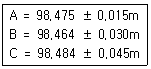
- 98.468m
- 98.474m
- 98.478m
- 98.484m
(정답률: 51%)
87. 수평거리 28km에 대한 굴절에 의한 오차는? (단, 굴절계수는 0.14, 지구의 곡률반지름은 6370km)
- -8.62m
- -7.36m
- -5.56m
- -2.98m
(정답률: 30%)
88. 삼각점 A에 기계를 세워 삼각점 B가 시준되지 않으므로 P점을 관측하여 ∠DAP = T' = 68°31'14"를 얻었다면 ∠DAB는? (단, e = 5m, S = 1400m, φ = 300°13'40")(오류 신고가 접수된 문제입니다. 반드시 정답과 해설을 확인하시기 바랍니다.)
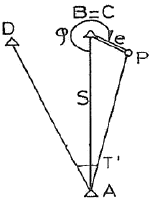
- 68°20'38"
- 68°21'38"
- 68°41'50"
- 68°42'50"
(정답률: 31%)
89. 수준측량의 용어에 대한 설명으로 틀린 것은?
- 전시 : 표고를 구하려는 점에 세운 표척의 눈금을 읽은 값
- 후시 : 측량해 나가는 방향을 기준으로 기계의 후방을 시준한 값
- 이기점 : 기계를 옮기기 위하여 어떠한 점에서 전시와 후시를 모두 취하는 점
- 중간점 : 어떤 지점의 표고를 알기 위하여 표척을 세워 전시를 취하는 점
(정답률: 48%)
90. 등고선에 대한 설명으로 틀린 것은?
- 등고선 간의 최단거리 방향은 최대 경사방향을 나타낸다.
- 높이가 다른 등고선은 절대로 서로 교차하지 않는다.
- 등고선이 도면 내에서 폐합하는 경우 등고선의 내부에는 산의 정상 또는 분지가 있다.
- 등고선은 분수선과 직각으로 만난다.
(정답률: 62%)
91. A점에서 2km 떨어져 있는 B점을 관측할 때 각도에서 15"의 각 오차가 있다면 B점에서의 위치오차는?
- 20.8cm
- 19.7cm
- 14.5cm
- 11.5cm
(정답률: 39%)
92. 다음 중 삼각망의 정확도가 높은 순서대로 나열된 것은?
- 단열 삼각망＞유심 심각망＞사변형 삼각망
- 유심 삼각망＞단열 삼각망＞사변형 삼각망
- 사변형 삼각망＞단열 삼각망＞유심 삼각망
- 사변형 삼각망＞유심 삼각망＞단열 삼각망
(정답률: 60%)
93. 트래버스의 조정법에 대한 설명으로 옳은 것은?
- 각측량의 정밀도가 거리측량의 정밀도보다 높을 때는 컴퍼스법칙으로 조정한다.
- 트랜싯법칙과 컴퍼스법칙은 모두 엄밀법에 의한 트래버스 조정방법이다.
- 각 측선의 길이에 비례하여 폐합오차를 조정하는 방법이 트랜싯법칙이다.
- 폐합오차 및 폐합비를 계산하여 허용범위 내에 있을 경우에만 조정계산 한다.
(정답률: 37%)
94. 폐합트래버스측량을 한 결과, 측선길이의 합이 267.172m, 위거의 합이 +0.011m, 경거의 합이 -0.024m일 때 폐합오차와 폐합비는?
- 0.026m, 1/10300
- 0.011m, 1/24300
- -0.013m, 1/20600
- -0.024m, 1/11100
(정답률: 50%)
95. 공간정보의 구축 및 관리 등에 관한 법률에 의한 벌칙으로 2년 이하의 징역 또는 2천만원 이하의 벌금에 해당되지 않는 것은?
- 측량업자나 수로사업자로서 속임수, 위력, 그 밖의 방법으로 측량업 또는 수로사업과 관련된 입찰의 공정성을 해친 자
- 성능검사대행자의 등록을 하지 아니하거나 거짓이나 그 밖의 부정한 방법으로 성능검사대행자의 등록을 하고 성능검사업무를 한 자다. 고의로 측량성과 또는 수로조사성과를 사실과 다르게 한 자
- 고의로 측량성과 또는 수로조사성과를 사실과 다르게 한 자
- 성능검사를 부정하게 한 성능검사대행자
(정답률: 54%)
96. 기본측량성과 및 공공측량성과의 고시는 최종성과를 얻은 날부터 며칠 이내에 하여야 하는가?
- 15일
- 30일
- 45일
- 60일
(정답률: 66%)
97. 공공측량 실시에 대한 설명으로 옳지 않은 것은?
- 공공측량은 기본측량성과나 다른 공공측량성과를 기초로 실시하여야 한다.
- 공공측량시행자는 공공측량을 하려면 미리 공공측량 작업계획서를 제출하여야 한다.
- 지방국토관리청장은 공공측량의 정확도를 높이거나 측량의 중복을 피하기 위하여 필요하다고 인정하면 공공측량시행자에게 공공측량에 관한 장기 계획서 또는 연간 계획서의 제출을 요구할 수 있다.
- 공공측량시행자는 공공측량을 하려면 미리 측량지역, 측량기간, 그 밖에 필요한 사항을 시ㆍ도지사에게 통지하여야 한다.
(정답률: 50%)
98. 5년마다 수립하게 되어 있는 측량기본계획에 포함되어야 하는 사항이 아닌 것은?
- 측량에 관한 기본 구상 및 추진 전략
- 측량의 국내외 환경 분석 및 기술연구
- 측량산업 및 기술인력 육성 방안
- 협회의 운영 및 관리
(정답률: 58%)
99. 공간정보의 구축 및 관리 등에 관한 법률상의 용어 정의로 옳지 않은 것은?
- 일반측량이란 지적측량 및 수로측량에서 제외된 측량을 말한다.
- 수로측량이란 해양의 수심ㆍ지구자기ㆍ중력ㆍ지형ㆍ지질의 측량과 해안선 및 이에 딸린 토지의 측량을 말한다.
- 지적측량이란 토지를 지적공부에 등록하거나 지적공부에 등록된 경계점을 지상에 복원하기 위하여 필지의 경계 또는 좌표와 면적을 정하는 측량을 말한다.
- 기본측량이란 모든 측량의 기초가 되는 공간정보를 제공하기 위하여 국토교통부장관이 실시하는 측량을 말한다.
(정답률: 55%)
100. 측량업의 종류에 해당되지 않는 것은?
- 측지측량업
- 지적측량업
- 공공측량업
- 수로조사업
(정답률: 58%)